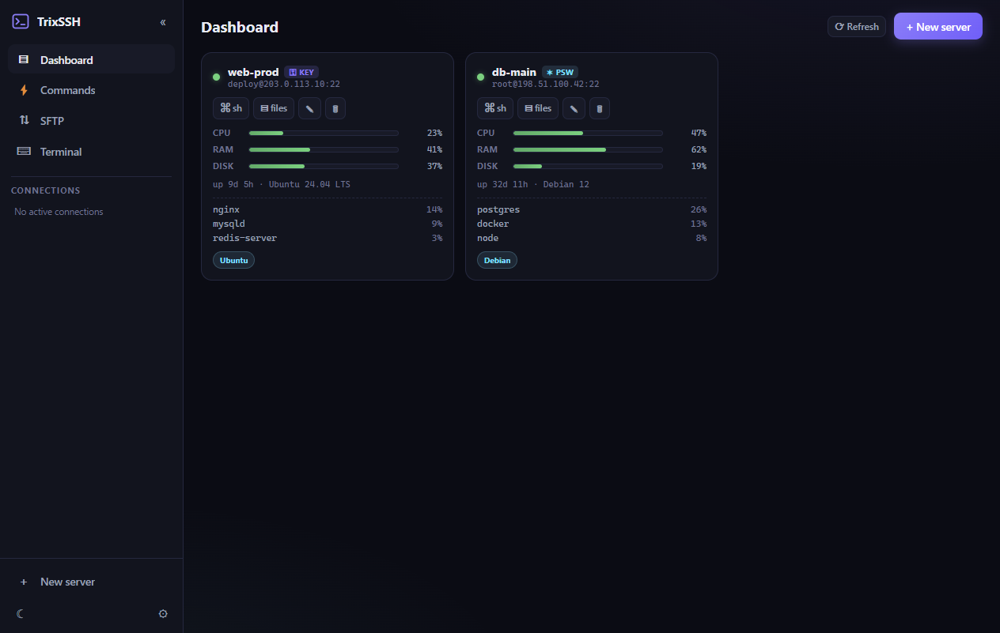
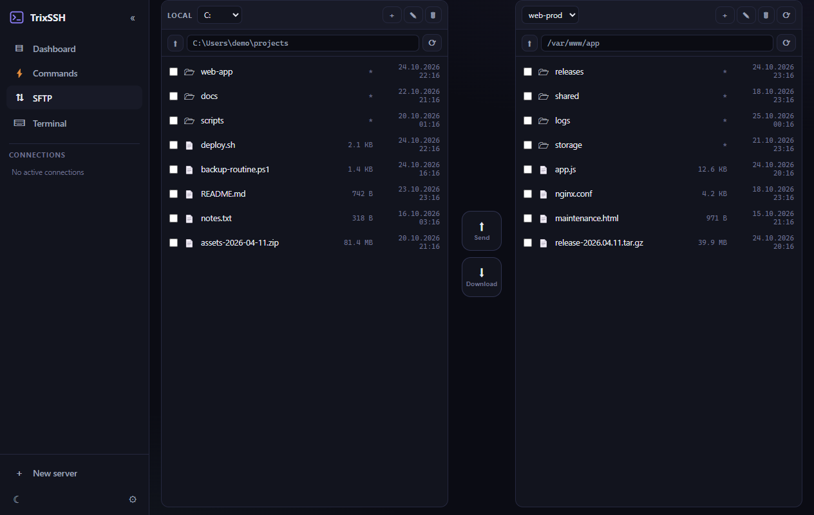
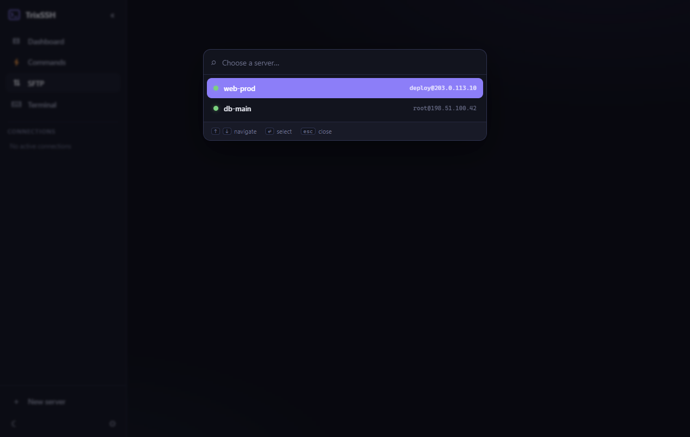
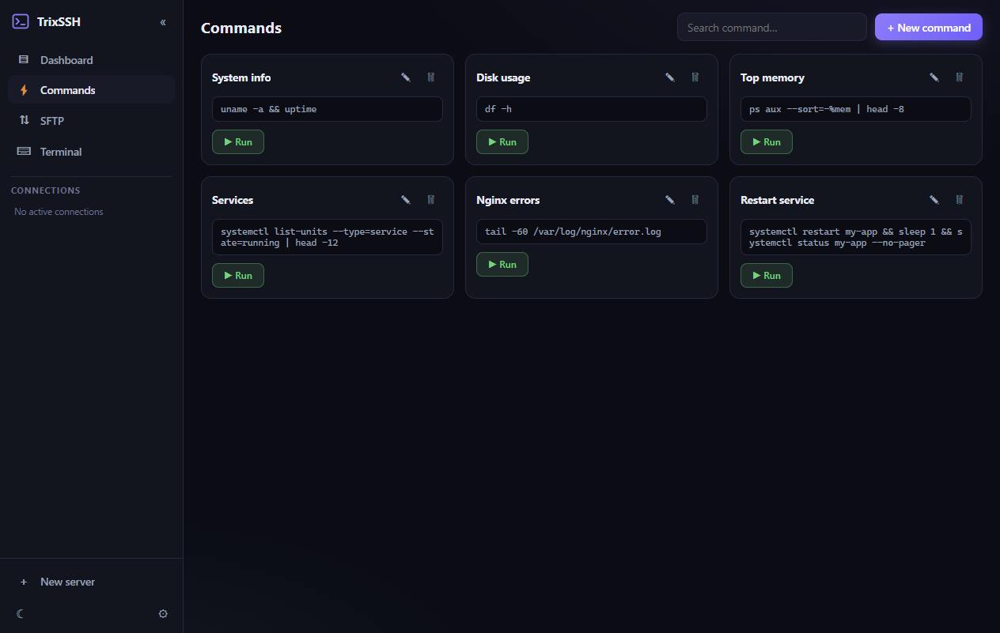
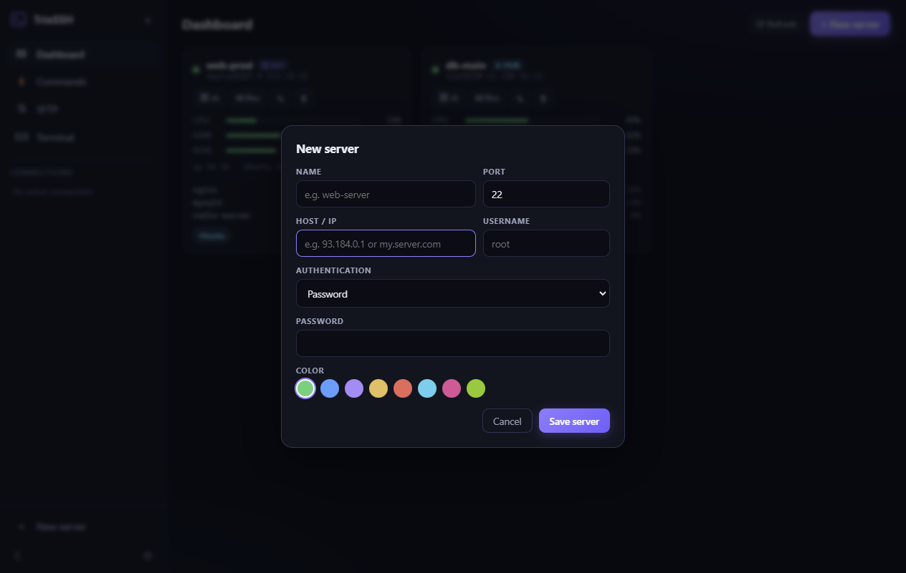
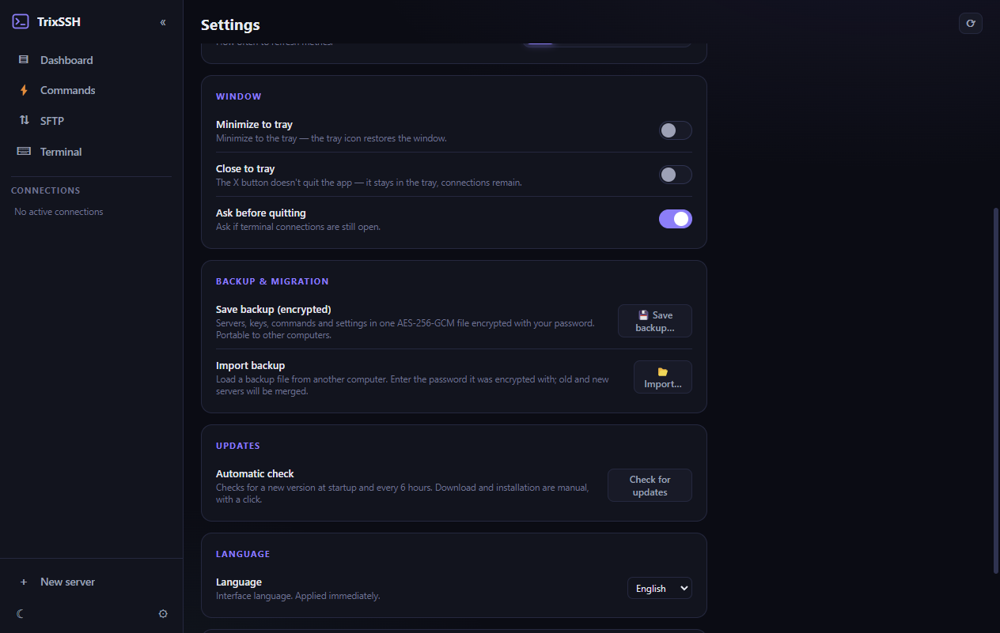

SSH, but fast,
beautiful and local.
TrixSSH is a modern desktop SSH client with tabs, SFTP, live server metrics, snippets and broadcast — all in one window. No telemetry. Your data stays on your machine.
Built for the platforms you use
Features
Everything you need, nothing you don't
A focused SSH client that stays out of your way — fast tabs, real SFTP, live metrics and a keyboard-first workflow.
Live Server Health & Metrics
CPU, RAM, Disk I/O and top processes — refreshed in real time for every server.
Instant Multi-Tab & Splits
Clean tabbing interface with fast shortcuts.
Command Snippets & Broadcast
Saved scripts, one click to all sessions.
Zero Telemetry, 100% Local
Your SSH keys, history and sessions stay only on your machine. Passwords encrypted with OS keychain (DPAPI/Keychain). Backup & migration via encrypted .trixbak files.
Screenshots
See it in action
All data shown is fictional demo data — TrixSSH never phones home.






Keyboard first
Shortcuts that stick
Download
Get TrixSSH 1.0.0
Free and open source. Pick your platform.
SmartScreen / Gatekeeper may warn (not code-signed yet) — choose More info → Run anyway or right-click → Open.
AppImage may need libfuse2. See all assets on the
Releases page.